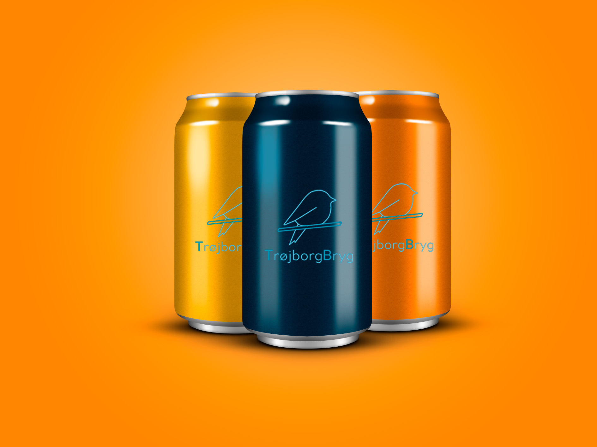

Om os
TrøjborgBryg, beliggende i hjertet af Århus, er et charmerende mikrobryggeri, grundlagt af et entusiastisk vennepar i midt og slut 30'ere. Hvad der begyndte som en simpel hobby, udviklede sig til en fuldblods passion for at skabe smagfulde alkoholfri øl. Drevet af ønsket om et sundere alternativ og inspireret af vores egen mangel på mangfoldighed inden for alkoholfri øl markedet, besluttede vi at tage skridtet og etablere TrøjborgBryg for fem år siden.
Vores mikrobryggeri har blomstret, og efter pandemien åbnede vi stolt dørene op til vores lille butik. TrøjborgBryg er mere end bare et bryggeri; det er et fællesskab, der deler glæden ved kreativitet og smagsoplevelser. Med et dedikeret fokus på alkoholfri brygning vil vi skabe et stort udvalg af forfriskende øl, der spænder fra klassisk til eksperimenterende smagsvarianter.
Vores lille butikken er en hyggelig oase, hvor besøgende kan opleve brygprocessen, smage på de nyeste kreationer og få indsigt i passionen bag
TrøjborgBryg. Vores mission er at tilbyde et alternativ til dem, der ønsker at nyde øl uden alkohol, derfor vil vi gerne hæve standarden for kvalitet og smag inden for alkoholfri brygning.